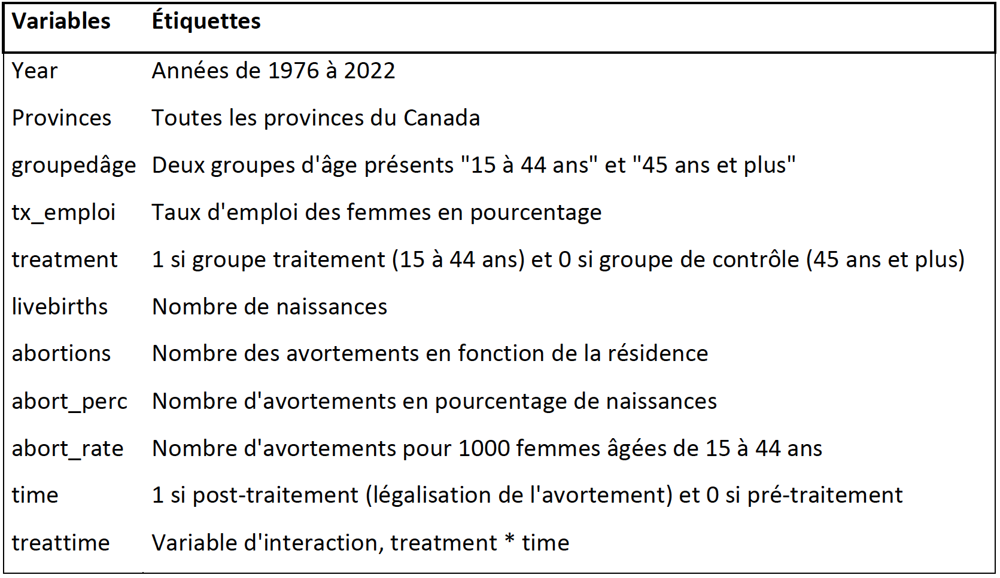

Analyse descriptive
![]()
Notre variable d’intérêt est le taux d’emploi des femmes au Canada. Nous allons observer comment cette variable a été influencée par la légalisation de l’avortement en 1988. Pour ce faire, nous allons utiliser la méthode des doubles différences avec comme groupe de traitement ‘les femmes de 15 à 44 ans’ et comme groupe de contrôle ‘les femmes de 45 ans et plus’. Notre analyse considère une période pré-traitement – 10 ans avant la légalisation de l’avortement – et une période post-traitement – un peu plus de 10 ans après la légalisation de l’avortement. Ainsi, notre période s’étend de 1978 à 2000. Avant de commencer une quelconque analyse économétrique, nous présentons les variables présentes dans notre base de données principales ainsi que quelques statistiques descriptives. Notre base de données – construites à partir des taux d’emploi rendus disponibles par Statistiques Canada et des taux d’avortement enregistrés par Wm. Robert Johnston – contient des données de panel ainsi que les variables présentes dans le Tableau 1.

Étant donné la présence de deux groupes dans notre analyse – groupe contrôle et groupe traitement – nous comparons les valeurs du taux d’emploi et du taux d’avortement pré et post-traitement.

On constate un taux d’emploi moyen plus élevé pour les femmes âgées de 15 à 44 ans par rapport aux femmes âgées de 45 ans et plus. Le taux d’avortement pour le groupe contrôle est indiquée par NA car les femmes âgées de 45 ans et plus ont un taux d’avortement pratiquement nulle étant donné que la ménopause arrive en moyenne entre 45 ans et 55 ans.
Avant de débuter les analyses économétriques, regardons l’évolution individuelle de nos variables.
Évolution de notre variable dépendante : taux d’emploi
Observons la différe d’évolution du taux d’emploi entre le groupe contrôle (45 ans et plus) et le groupe traitement (15 à 44 ans).
# Importation des données
employment_data <- read_dta("~/Desktop/UdeM/sc.economiques/H23/ECN3950/Data/employment_data.dta")
employment_data_can <- employment_data %>%
filter(géo == "Canada")
# Évolution du taux d'emploi en fonction des deux groupes ; contrôle et traitement
o <- ggplot(employment_data_can,
mapping = aes(x = year, y = tx_emploi, color = groupedâge)) +
geom_line() +
labs(title = "GRPH 1 : Évolution des taux d'd'emploi pour le groupe contrôle et traitement",
x = "Années",
y = "Taux d'emploi") +
theme_ipsum() +
geom_vline(xintercept = 1988 , color = "red", linetype = "dashed")
o <- ggplotly(o)
oNotre hypothèse de base pour notre modèle des doubles différences assume que la trajectoire du taux d’emploi au cours du temps pour les deux groupes est parallèle. Le graphique 1 permet d’observer l’évolution du taux d’emploi pour les deux groupes d’âge au Canada. L’évolution n’est pas réellement parallèle entre les deux groupes comme nous le voudrions pour notre modèle. Des chocs externes ou des événements affectant le taux d’emploi des femmes différemment pour le groupe de contrôle et pour le groupe de traitement peuvent en être responsable. On peut remarquer que le taux d’emploi pour le groupe de contrôle augmente au fil du temps, tandis que le taux d’emploi pour notre groupe de traitement oscille autour du niveau de 65% à la suite de la légalisation de l’avortement.
Évolution de notre variable indépendante : taux d’avortement
En ce qui concerne notre variable indépendante, le graphique 2 nous permet d’observer les taux d’avortement au cours des années au Canada. À la suite de la légalisation de l’avortement, les taux d’avortement pour les femmes âgées de 15 à 44 ans a rapidement augmenté.
# Importation des banques de données
Canada_abort <- read_excel("~/Desktop/UdeM/sc.economiques/H23/ECN3950/Data/Canada_abort.xlsx")
# Évolution du taux d'avortement pour les 15 à 44 ans au Canada
p <- ggplot(Canada_abort,
mapping = aes(x = year, y = `abortion %, all in country`)) +
geom_line() +
labs(title = "GRPH 2 : Évolution du taux d'avortement pour les 15 à 44 ans au Canada",
x = "Années",
y = "Taux d'avortement en pourcentage de naissances dans le pays") +
theme_ipsum() +
geom_vline(xintercept = 1988 , color = "red", linetype = "dashed")
p <- ggplotly(p)
pCependant, cette hausse des taux d’avortement ne se produit pas de façon uniforme au sein de toutes les provinces. Malgré la légalisation de l’avortement, certaines provinces à tendance « conservatrice et religieuse » ne sont pas nécessairement en accord avec cette pratique. Celles-ci mettent en place des procédures longues et complexes lorsqu’une femme souhaite interrompre une grossesse, ne facilitant pas l’accès à l’avortement aux femmes. Dans le prochain graphique (prendre en considération le manque de données dans plusieurs provinces) nous pouvons observer les avortements ayant eu lieu dans chaque province.
# Importation des données d'avortement par province
abortion_loc_all_prov_19782000 <- read_dta("~/Desktop/UdeM/sc.economiques/H23/ECN3950/Data/abortion__loc_all_prov_19782000.dta")
# Évolution du taux d'avortement au sein des provinces
q<- ggplot(abortion_loc_all_prov_19782000,
mapping = aes(x = year, y = abort_perc_loc, color = province)) +
geom_line() +
labs(title = "GRPH3 : Évolution du taux d'avortement au sein de chaque province",
x = "Années",
y = "Taux d'avortement en pourcentage") +
theme_ipsum() +
geom_vline(xintercept = 1988 , color = "red", linetype = "dashed")
q <- ggplotly(q)
qLe graphique ci-dessous prend en compte la résidence de la femme. On observe donc les taux d’avortement par province en fonction de la résidence de la femme.
# Importation des données d'avortement pour les résidents
abortion_all_prov_19782000 <- read_dta("~/Desktop/UdeM/sc.economiques/H23/ECN3950/Data/abortion_all_prov_19782000.dta")
# Évolution du taux d'avortement en fonction de la résidence de la femme
r<- ggplot(abortion_all_prov_19782000,
mapping = aes(x = year, y = abort_perc, color = province)) +
geom_line() +
labs(title = "GRPH4 : Évolution du taux d'avortement en fonction de la résidence de la femme",
x = "Années",
y = "Taux d'avortement en pourcentage (résidentes)") +
theme_ipsum() +
geom_vline(xintercept = 1988 , color = "red", linetype = "dashed")
r <- ggplotly(r)
rL’exemple type démontrant l’importance du facteur ‘résidence de la femme’ est le Nouveau-Brunswick ; province à tendance conservatrice et religieuse qui n’est pas en faveur de la légalisation de l’avortement et qui a restreint l’accès à l’avortement notamment par la non mise en place d’hôpitaux et de cliniques offrant des services d’avortement. Dans le graphique 3, on constate un faible taux d’avortement pour la province. Cependant, lorsqu’on se focalise sur le graphique 4, on s’aperçoit que le taux d’avortement est nettement plus élevé que dans les autres provinces. On peut en déduire que de nombreuses femmes résidants au Nouveau-Brunswick ont eu recours à des avortements hors province. Ces avortements pourraient avoir eu lieu en Colombie-Britannique, en Ontario ou encore au Québec – provinces ayant des taux d’avortement élevés, entre 25 et 30%, après la légalisation de l’avortement dans le graphique 3.
Ainsi, pour la suite de l’analyse nous allons nous focaliser sur les provinces pour lesquelles on peut observer une variation considérable sur le taux d’avortement dans le graphique 4. La raison principale est qu’on veut prendre en considération la résidence de la femme car on s’attend à ce que les femmes ayant bénéficié d’un avortement lors d’une grossesse involontaire puissent participer sur le marché du travail et prendre part à l’augmentation du taux d’emploi des femmes globalement. Notre sélection de provinces est la suivante : Manitoba, Nouveau-Brunswick et Québec, Terre-Neuve-et-Labrador, Île-du-Prince-Édouard.
Citation
@online{hubacova2023,
author = {Juliana Hubacova},
editor = {},
title = {Analyse Descriptive},
date = {2023-09-21},
langid = {en}
}